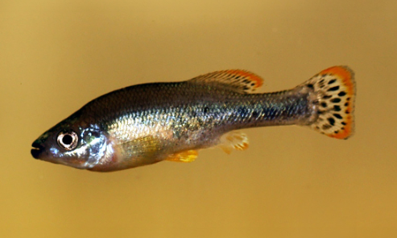

Systématique
- Ordre : Cyprinodontiformes
- Famille : Goodeidae
- Genre : Ilyodon
- Espèce : I. xantusi
- Auteur : Hubbs & Turner, 1939

Ilyodon xantusi est un poisson vivipare de la famille des Goodeidae, endémique de l'ouest du Mexique. C'est une espèce robuste, au corps comprimé latéralement, présentant une tête large et une bouche terminale forte. Sa livrée est caractérisée par une coloration de base argentée à dorée, parsemée de nombreuses taches noires irrégulières sur les flancs qui peuvent se rejoindre pour former une bande longitudinale.
Les femelles sont plus imposantes, atteignant une taille de 8 à 10 cm, tandis que les mâles sont plus sveltes et mesurent environ 6 à 8 cm. L'espèce est morphologiquement proche d'Ilyodon furcidens, avec lequel elle partage de nombreux habitats, mais elle s'en distingue par des caractères dentaires et des nuances de coloration au niveau des nageoires impaires.
Ilyodon xantusi est un poisson extrêmement actif et bon nageur. En aquarium, son comportement peut être qualifié de dynamique, voire parfois entreprenant. Les mâles passent une grande partie de leur temps à parader et à se poursuivre pour établir une hiérarchie au sein du groupe. Ce n'est pas une espèce craintive.
Dans son milieu naturel, il apprécie les courants modérés à forts. En captivité, un brassage efficace de l'eau est recommandé pour maintenir une oxygénation optimale. Bien que ce ne soit pas un prédateur strict, sa vivacité peut stresser des espèces trop calmes ; il est donc préférable de le maintenir en bac spécifique ou avec d'autres Goodeidae robustes.
Mode : Vivipare matrotrophe.
Le processus de reproduction suit le modèle des Goodeinae. Le mâle utilise son andropode pour la fécondation. La gestation est d'environ 55 à 65 jours. Les embryons bénéficient d'un apport nutritif maternel via les trophotaeniae. Les femelles matures peuvent donner naissance à des portées importantes, dépassant parfois 50 alevins.
Les jeunes naissent à une taille impressionnante (jusqu'à 20 mm) et sont capables de se nourrir immédiatement de la même nourriture que les adultes. Bien que l'espèce soit plus tolérante que le genre Allotoca, il est conseillé de fournir de nombreuses cachettes (plantes, racines) pour protéger les nouveau-nés de la curiosité parfois brusque des adultes.
Dimorphisme sexuel : Le mâle est plus petit et possède un andropode (premiers rayons de la nageoire anale raccourcis et séparés). Il présente souvent des liserés jaunes ou orange plus vifs sur les nageoires dorsale et caudale. La femelle est nettement plus grande et possède une nageoire anale de structure classique.
Espérance de vie : 5 à 7 ans en aquarium si les conditions de température et d'hygiène sont respectées.
L'espèce se rencontre dans les bassins côtiers de l'ouest du Mexique, notamment dans les États de Colima et Jalisco, incluant le bassin du Rio Armeria. Elle peuple les rivières et les ruisseaux au substrat rocheux ou graveleux, souvent dans des zones de fort courant.
L'eau y est généralement alcaline et moyennement dure. Contrairement à beaucoup d'autres Goodeidae de haute altitude, Ilyodon xantusi tolère des températures un peu plus chaudes (jusqu'à 26-27 °C ponctuellement), bien qu'une moyenne de 22-24 °C soit idéale. Son habitat est menacé par la pollution industrielle et agricole, ainsi que par les barrages.
Répartition

Origine naturelle :
- Mexique : États de Colima et Jalisco (Bassin du Rio Armeria et affluents).
- Localité type : Rio Armeria, Colima, Mexique.
Considérée comme vulnérable. Bien que localement abondante dans certaines stations, la dégradation de la qualité de l'eau dans son aire de répartition restreinte inquiète les biologistes.
Paramètres de maintenance
Température : 20 à 25 °C (supporte jusqu'à 27 °C).
pH : 7,2 à 8,5.
GH : 10 à 25 °dGH.
Courant : Modéré à fort.
Volume conseillé : Minimum 150 L pour un groupe, compte tenu de leur taille et de leur activité.
Régime alimentaire
Régime : Omnivore à forte tendance alguivore.
Il passe une grande partie de sa journée à brouter les algues sur le décor. En aquarium, il est essentiel de fournir des aliments riches en végétaux (spiruline). Il accepte également les proies vivantes ou congelées, ainsi que les granulés, mais une carence en végétaux peut nuire à son système digestif.